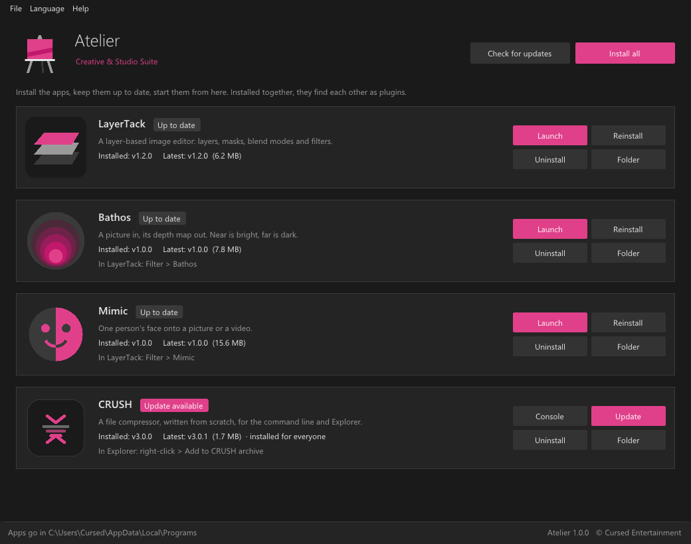
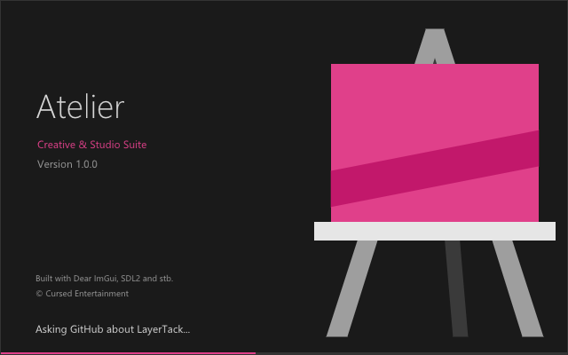

How it works
Unzip Atelier-Launcher-win64.zip and run install.bat. The launcher asks GitHub for each app's latest release, installs it in %LOCALAPPDATA%\Programs\<App> with Start menu and Desktop shortcuts, and updates it when a new one is out. LayerTack finds Bathos and Mimic there for Filter > Bathos and Filter > Mimic. Twelve languages, from English to Deitsch.
